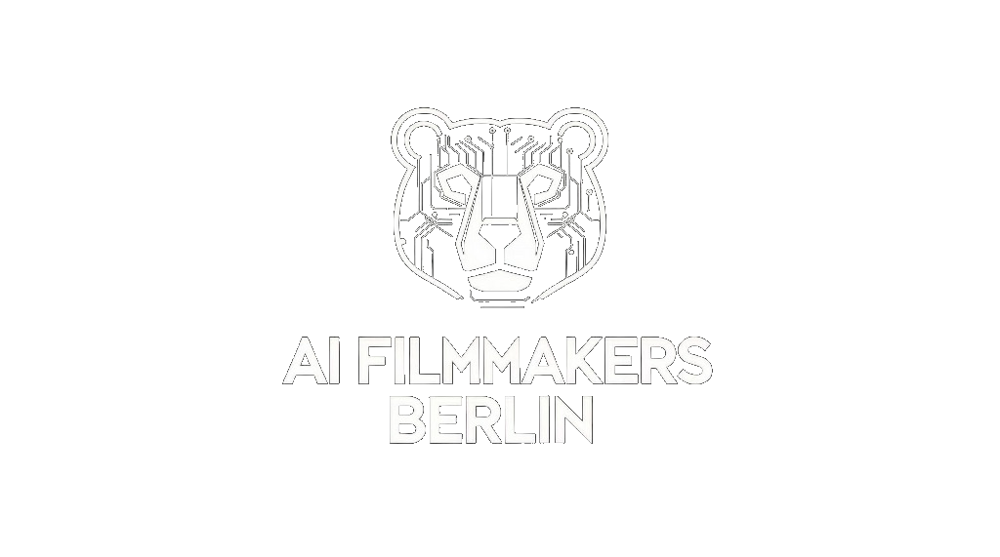

.jpeg)
.jpeg)
.jpeg)

A community for filmmakers, artists and technologists exploring the future of cinema with AI.
AI Filmmakers Berlin brings together people working across storytelling, filmmaking and generative tools through events, screenings, talks and exchange.
Be the first to hear about the next AI Filmmakers Berlin event
Temporary fallback: this opens the current signup form with your email pre-filled.
AI Filmmakers Berlin is a growing community of filmmakers exploring how generative AI is changing cinema and storytelling.
Our meetups bring together filmmakers, AI researchers, visual artists, and storytellers to explore how generative AI is reshaping contemporary cinematic practice. From AI-generated short films to cutting-edge production workflows — we cover it all.
What began in Berlin has inspired chapters in other German cities. Our community has grown organically through word of mouth, driven by a shared passion for the creative possibilities of AI in filmmaking.
Watch and discuss the latest AI-generated short films and experimental works from our community members.
Connect with fellow creators, share workflows, and build collaborations in a supportive creative environment.
Learn new techniques, tools, and approaches to AI filmmaking through hands-on sessions and talks.
Be part of a growing movement that's defining how AI and human creativity come together in film.
Special meetup at Potsdamer Platz in collaboration with Runway and ProSiebenSat.1, focusing on high-trust creative exchange and extended distribution logics.
Special EventJoin filmmakers, creatives, and technologists for an in-person meetup screening and discussing the future of filmmaking with AI.
Screening & DiscussionJoin us at betahaus, Berlin to discuss the latest AI filmmaking trends, screen short films, and run a live prompting session.
Screening & WorkshopJoin us at workish.berlin in Neukölln for screenings, networking, and Live Prompting with the SMC.
Screening & Live PromptingJoin us at workish.berlin in Neukölln for a special screening of AI short films and networking with the community.
Screening & NetworkingWorks showcased at AI Filmmakers Berlin meetups by our talented community members.

Creator of multi-award-winning AI films like "The Cinema That Never Was" and recently "Ceremonie", which won the "Shared Trace" category at UnHuman Shorts.
A Berlin-based director specializing in short formats, visual storytelling, and AI-driven media. Sylvia leverages complete AI workflows across the entire creative pipeline—from concept and animation to sound design and post-production.

Wim Wenders scholar and director of "KALA" and "BILAL". His recent AI short film premieres explore the boundaries of copyright and creative intention.

Exploring the intersection of AI and traditional filmmaking, questioning where creative ownership lies when technology becomes a collaborator.

Creator of the AI short film "The Last Pencil", exploring what's possible when combining emerging technology with human storytelling.
What started with seven curious minds has grown into one of Europe's most active AI filmmaking communities.
Our members include professional filmmakers, VFX artists, AI researchers, creative technologists, and storytellers who are passionate about exploring how artificial intelligence can enhance and transform the art of filmmaking.
We foster an inclusive environment where beginners and experts alike can share ideas, learn from each other, and push the boundaries of what's possible when AI and human creativity converge.
Award-winning Berlin-based GenAI Director, screenwriter, and producer. Ben combines cinematic storytelling with AI-native filmmaking and is a creative partner for Runway. He previously worked with 3D, VR, and XR technologies at Zalando.
Until the one-step flow is live, the field at the top opens the current signup form with your email already filled in.